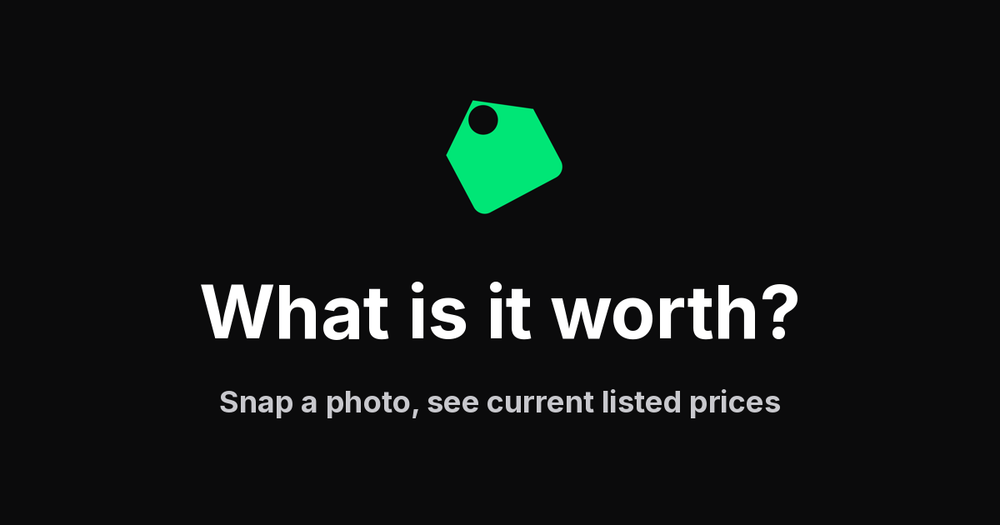

"What is it worth?" is the question you ask when you're looking at your items and you want a real answer, not a remembered headline. It might be a shoebox of cards, a row of books, a few watches, or a mixed shelf you haven't gone through in years. Typing a short name for the whole group is how the wrong edition, the wrong date, or the wrong condition sets the story.
The clearer route is to check your items from a photo, one piece at a time.  How Much Is It Worth: Scanner is built for that wording and that job.
How Much Is It Worth: Scanner is built for that wording and that job.
A photo is more honest than a name because the details that change the market are often small. An edition mark on a card, a date on a coin, a hallmark on a piece of jewelry, a model plate on a camera, a set number on a toy: those are the things a short search tends to skip.
Take or upload up to three photos of an item. The front gets you started. The back or a mark makes the identification sharper. You confirm or correct that identification before prices run. Then you see a Worth about figure, the listed range, a confidence level, and the live listings behind it. If the data is thin, the result is labelled as a rough estimate. The product won't invent a precise number, and it isn't a certified appraisal or an offer to buy.
That's how you check your items from a photo without pretending one famous sale speaks for the whole box.
Want to try it? Snap a photo at https://howmuchisitworth.today/what-is-it-worth. The website includes one free web scan a day. Get the free iPhone app at https://apps.apple.com/app/id6832980231, with 3 free scans plus 1 a week. On Android? Check https://howmuchisitworth.today/ for the Android release.
If you have a set or a small collection, scan the pieces that look oldest, tagged, graded, hallmarked, or unusual first. You can adjust condition (Good, Near Mint, Graded, and more) and see the value update for each one. Save scans to a collection and keep a running picture of what you own, instead of a pile of screenshots you'll never find again.
If you decide to sell, copy a ready-made listing in a tap, with Quick sale, Fair price, or Top dollar. Describe the real condition. Don't copy the most optimistic ask in the range.
The scanner covers coins and banknotes, trading and sports cards, antiques, jewelry, gold and silver, watches, stamps, comics, books, vinyl, toys, handbags, sneakers, phones, cameras, games, furniture, and other everyday items with a resale market. If people buy and sell it, the app can usually show you what that piece is worth. Rare one-offs get a wider range and a tip to get a professional appraisal.
What is it worth is still a question about asking prices, not a guaranteed sale and not an insurance figure. A shop offer can sit below the listed range because the shop has to resell. That's useful context, especially if you're clearing a house and need to decide what to keep, list, or take further.
The app is free to start, with 3 free scans plus 1 a week. Optional Premium is $4.99 a week (no trial), or $29.99 a year with a 3-day free trial on the yearly plan only. Prices may vary by store and country.
You can read another take in How Much Is It Worth: Scanner.
If you're asking what is it worth, check your items from a photo. Start at https://howmuchisitworth.today/what-is-it-worth, or download the app and scan the first one free.
I also wrote a companion post for when you still can't name the object: this companion guide.